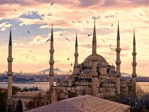
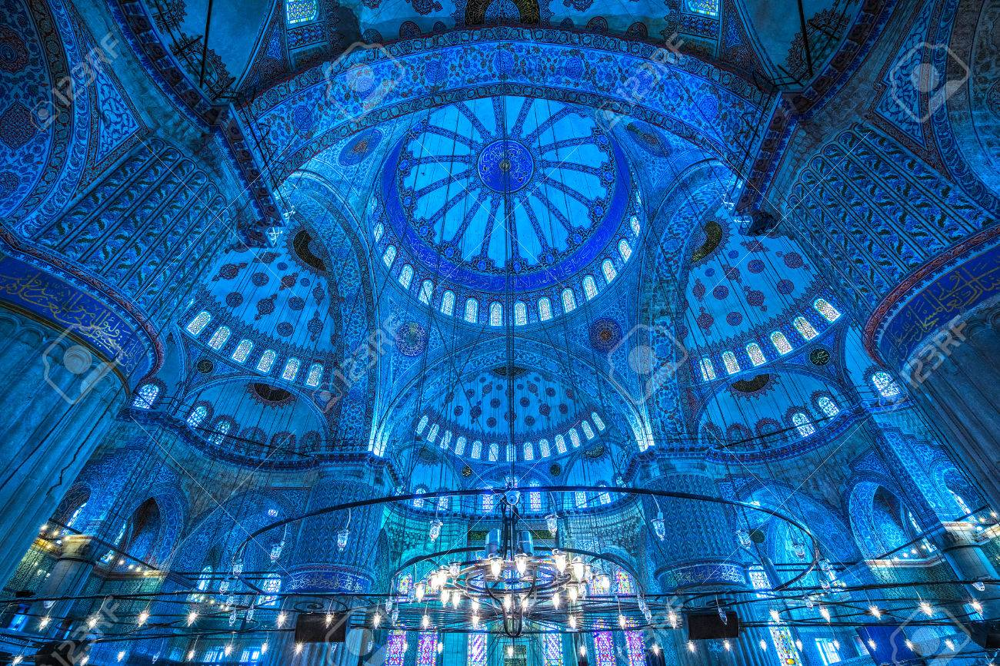

La Mosquée Bleue
La Mosquée Bleue est la plus grande mosquée d'Istanbul. Son nom en turc est "Sultanahmed Camii", qui signifie mosquée du sultan Ahmed, puisqu'elle a été construite par le sultan Ahmed Ier, entre 1609 et 1616. Elle a été inaugurée en 1617, sous le mandat de Moustapha Ier.
L'architecture

La conception de la mosquée Sultanahmet est l'aboutissement de deux siècles de développement à la fois de mosquées ottomanes et d'églises byzantines. Elle reprend certains éléments byzantins de la proche Ayasofya (Sainte Sophie) avec une architecture islamique traditionnelle.
Le dôme central mesure 23 mètres de diamètre et 43 mètres de haut. La mosquée bleue possède six minarets. Au moment de sa construction, cela a suscité de nombreuses controverses car la Mecque en a également six. Plus tard, et pour apaiser les fidèles, un septième minaret a été construit sur La Mecque afin de la différencier
L'intérieur

En entrant dans la mosquée bleue, vous découvrirez vite la raison de son nom : plus de 20 000 tuiles bleues ornent le dôme et la partie supérieure de la mosquée. Toutes les tuiles viennent de la ville d'Iznik (Nicea). L'éclairage particulier de la mosquée est dû à ses 200 vitraux et aux lustres suspendus au plafond.
Visite de la Mosquée Bleue
La Mosquée Bleue d’Istanbul, dont l’entrée est libre, est ouverte tous les jours en dehors des horaires de prières. Pour y accéder, vous pouvez utiliser le tramway en descendant à l’arrêt Sultanahmet. Vous pouvez également y accéder en vous baladant dans le quartier de Sultanahmet, quartier touristique par excellence de la ville d’Istanbul.
Il faut compter au moins une heure pour visiter la Mosquée Bleue en entrant dans la salle de prière mais aussi en découvrant la cour intérieur et en faisant le tour de la mosquée. Avec les arrêts photos dans les environs de la mosquée bleue, vous pouvez même facilement compter une heure et demi en tout pour la visite de la mosquée bleue, mosquée la plus connue d’Istanbul et de Turquie d’ailleurs !
Pour entrer dans la Mosquée Bleue, comme dans le reste des mosquées de la ville, vous devrez porter les vêtements appropriés et enlever vos chaussures. Les femmes doivent avoir les épaules et les cheveux couverts. Si vous n'avez rien pour vous couvrir, on vous donnera un foulard à l'entrée.